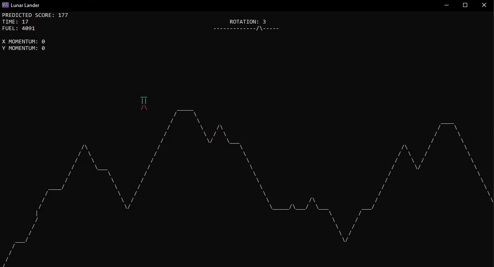
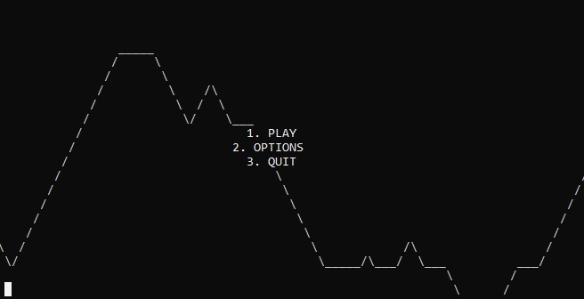
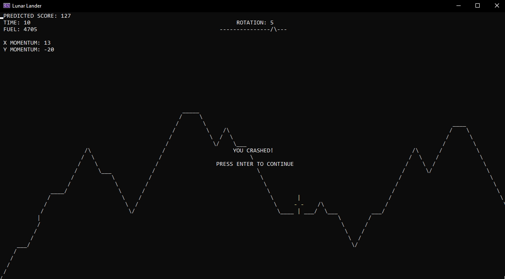
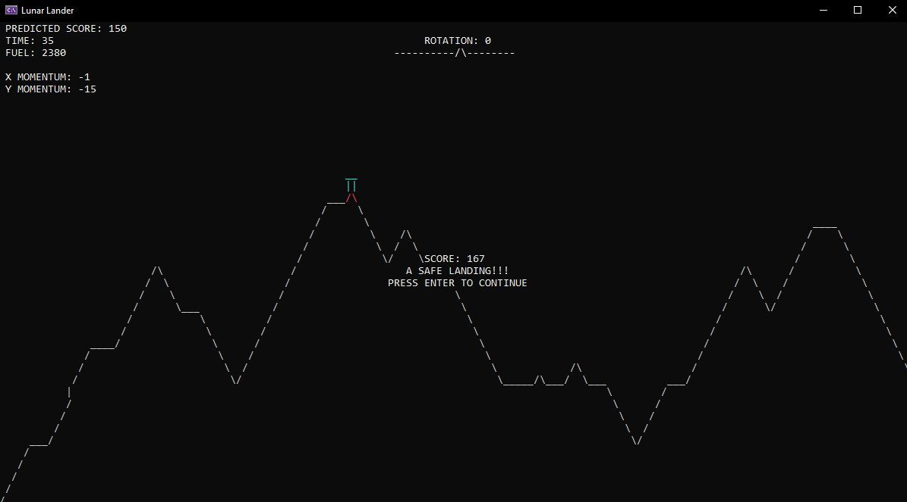

Lunar Lander
This is a recreation of the classic arcade game Lunar Lander in which the player has to attempt to land on the surface of a moon. It was coded in C++ and the entire game runs in the command line.
The game contains a splash screen, main menu and options menu where the player can select the amount of fuel they will start with to adjust the difficulty to their liking.
The lander itself is animated with different ASCII sprites for when it is facing different directions, and it has an explosion animation if it crashes.
My implementation of the game has a rotation meter at the top of the screen which shows the player which way up they are. Its an important inclusion as the lander physics take into account the rotation of the craft, but due to the nature of the command line graphics the player would otherwise not be able to see how upright they are.
To land successfully, the player must land on flat ground, at a low speed, while being upright. Its easier said than done!
